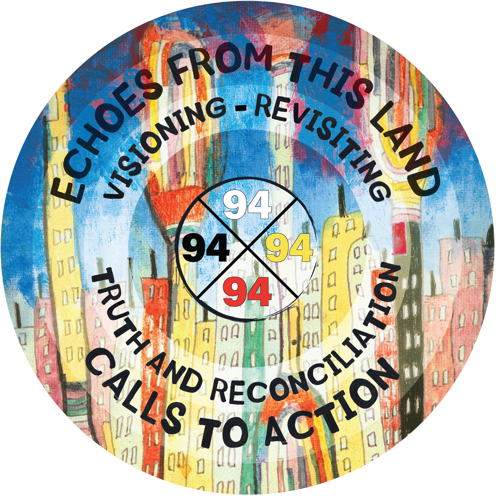

Echoes from This Land: Visioning and Revisiting the Truth and Reconciliation 94 Recommendations fostered a collaborative experience that provided artists and creators from Indigenous and non-Indigenous communities of different backgrounds, ages, genders, ethnicities, abilities, incomes, nationhoods, and nationalities with a forum to openly discuss and better understand the findings of the Truth and Reconciliation Commission and its resulting 94 Calls to Action.